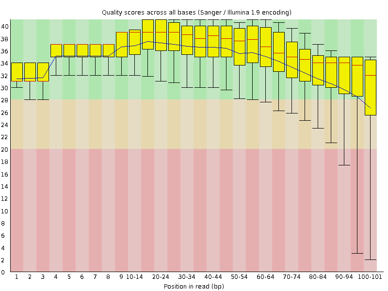
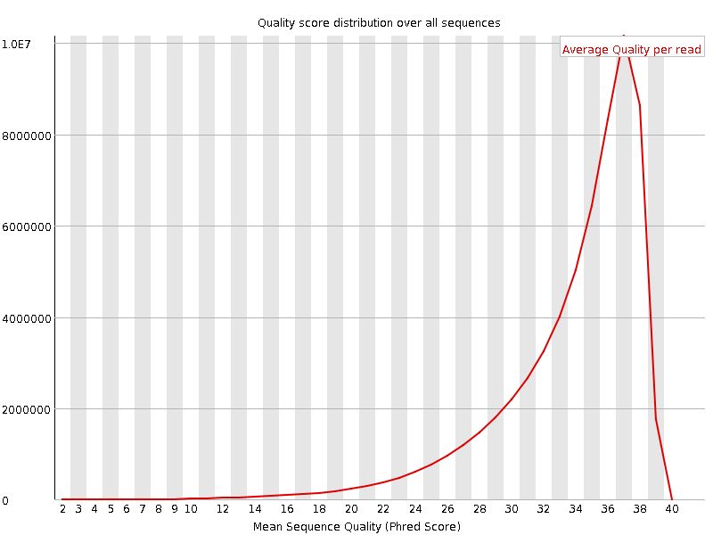
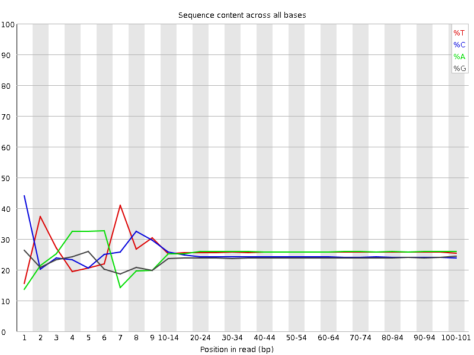
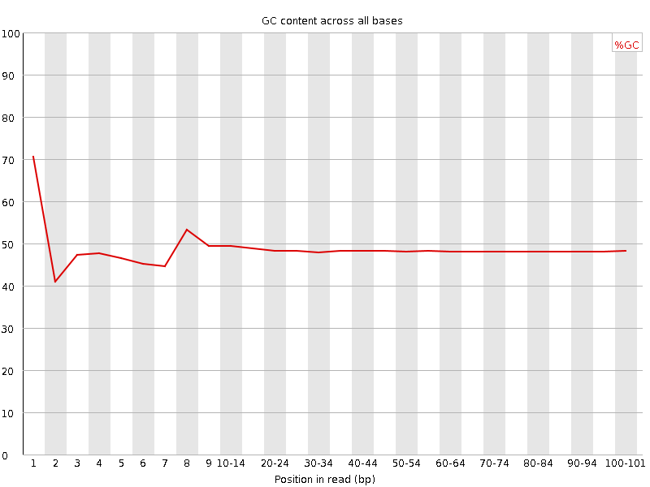
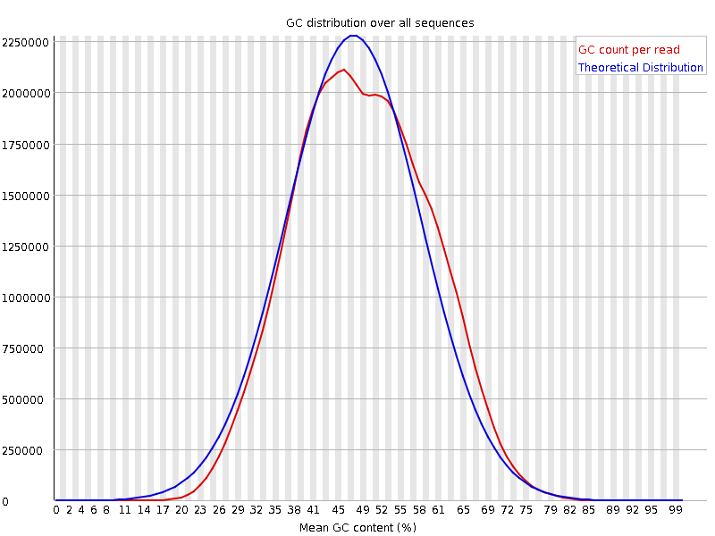
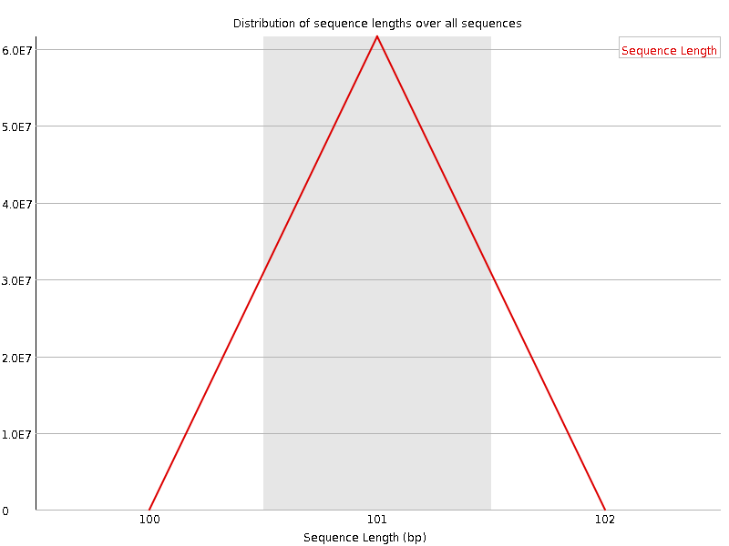
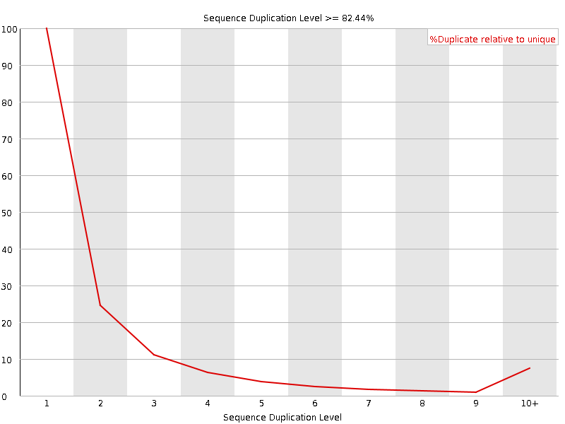
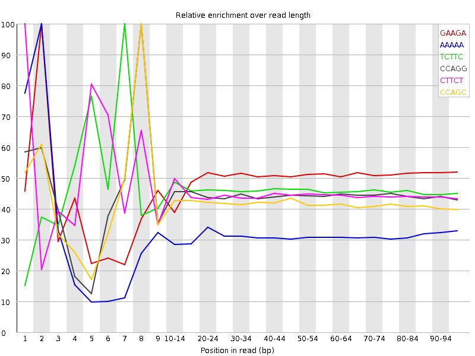

![[OK]](Icons/tick.png) Basic Statistics
Basic Statistics
| Measure | Value |
|---|---|
| Filename | ERR361062_2.fastq |
| File type | Conventional base calls |
| Encoding | Sanger / Illumina 1.9 |
| Total Sequences | 61570072 |
| Filtered Sequences | 0 |
| Sequence length | 101 |
| %GC | 48 |
Per base sequence quality

Per sequence quality scores

![[FAIL]](Icons/error.png) Per base sequence content
Per base sequence content

Per base GC content

Per sequence GC content

Per base N content

Sequence Length Distribution

Sequence Duplication Levels

Overrepresented sequences
No overrepresented sequences
![[WARN]](Icons/warning.png) Kmer Content
Kmer Content

| Sequence | Count | Obs/Exp Overall | Obs/Exp Max | Max Obs/Exp Position |
|---|---|---|---|---|
| GAAGA | 14787655 | 2.5713904 | 5.189293 | 2 |
| AAAAA | 17064235 | 2.5493698 | 8.1317215 | 2 |
| TCTTC | 15702860 | 2.5084155 | 5.421931 | 7 |
| CCAGG | 13162110 | 2.4924314 | 5.6045513 | 8 |
| CTTCT | 15454210 | 2.4686956 | 5.448001 | 1 |
| CCAGC | 13105435 | 2.4005032 | 5.7269487 | 8 |
| TTTTT | 16313295 | 2.3639083 | 5.5514817 | 2 |
| CTGGG | 12141425 | 2.362451 | 6.0683312 | 1 |
| CTGGA | 12782670 | 2.3054378 | 7.1561627 | 1 |
| TCCAG | 13085900 | 2.2829084 | 8.04786 | 7 |
| CTTCA | 14199185 | 2.2821047 | 8.179603 | 1 |
| GGAAG | 11346640 | 2.128616 | 5.0500255 | 1 |
| CTCCA | 12529520 | 2.1143286 | 6.980636 | 6 |
| TCCTG | 12085165 | 2.0954928 | 5.633247 | 7 |
| CTGCC | 11220850 | 2.0427969 | 5.730411 | 8 |
| CAGAA | 12021335 | 2.0219693 | 5.1358347 | 1 |
| GCCAG | 10523350 | 1.992745 | 5.010483 | 1 |
| CTGGC | 10481720 | 1.9727808 | 5.491522 | 1 |
| GAAAA | 12209975 | 1.9679863 | 5.1722574 | 1 |
| CCACC | 10717660 | 1.8989083 | 5.652226 | 8 |
| AAAAT | 12574665 | 1.8672009 | 6.0108457 | 3 |
| TCTCC | 10935885 | 1.8341743 | 5.103723 | 7 |
| TTCCA | 11148520 | 1.7917995 | 5.3915296 | 6 |
| CTTTG | 10824635 | 1.7876433 | 7.7780704 | 1 |
| CTTTT | 11726165 | 1.7840656 | 6.175841 | 1 |
| CTCAG | 10145970 | 1.7700213 | 6.2617393 | 1 |
| CAAAA | 11236955 | 1.7518995 | 5.7758656 | 1 |
| TCTGC | 9942865 | 1.7240309 | 5.780242 | 7 |
| CTTGG | 9616505 | 1.7238427 | 6.839793 | 1 |
| GGAAA | 9903970 | 1.722178 | 5.412608 | 1 |
| TCCAC | 8999265 | 1.5186061 | 5.7810235 | 7 |
| TTTGA | 9192745 | 1.4547833 | 6.007154 | 2 |
| TCCAA | 8269470 | 1.3372151 | 5.038226 | 7 |
| CTTGA | 7822425 | 1.2997519 | 5.261913 | 1 |
| TTTAA | 8859240 | 1.2995358 | 5.180099 | 2 |
| ATCCA | 7960875 | 1.2873137 | 6.4373975 | 6 |